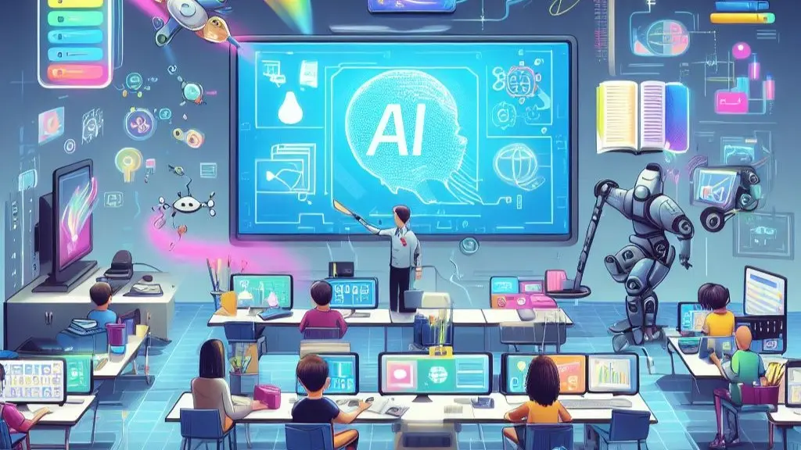
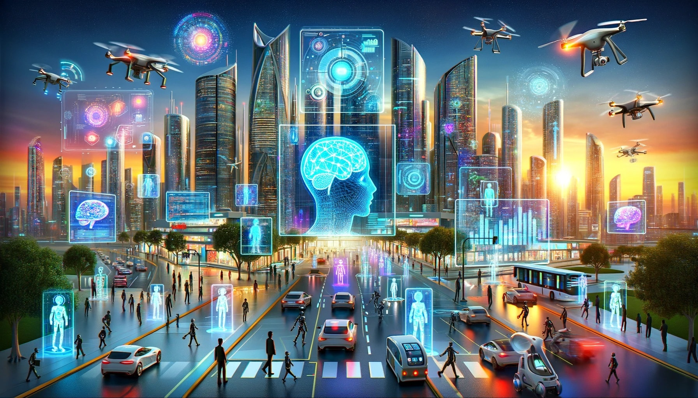

How does AI use effect the education and training sectors ethically?
The use of AI in education and training has the potential to improve learning results, make
education more accessible, and simplify administrative work. However, it also brings up important
ethical issues that must be carefully considered to ensure it is used responsibly.
Bias and Fairness
AI systems are trained using large datasets, and if those datasets have
biases, like not representing certain groups enough or having biased content, AI can spread or even
make these biases worse. This is why AI needs to carefully select the data used to train AI, regularly
check for biases, and make sure the algorithms are clear and fair.
Data Privacy and Security
AI in education uses a lot of data, which often includes sensitive information about students and trainers, like their
grades, personal details, and learning habits. It’s important to follow privacy laws, like GDPR or FERPA,
be clear about how data is collected, and make sure students and trainers give their consent. Institutions should also use strong
security measures, like data encryption, to keep information safe.
Transparency and Accountability
AI decisions, like grading or college admissions recommendations, can often be unclear. If students, trainers or teachers
don’t understand how AI makes its choices, it can lead to a lack of trust and responsibility. AI models should
give clear, understandable reasons for their decisions, so students, trainers and teachers can trust them and
challenge them when needed.
Accessibility and Equity
AI has the potential to make education more accessible, especially for students and trainers with disabilities or those in
areas that don't have many resources. As long as they have access to technology and internet access, AI is highly
accessible to all.
Over-Dependence and Skill Degradation
When students rely too much on AI tools for learning, they might become overly dependent on technology to do
their work. If AI takes care of tasks like solving math problems or writing essays, students and trainers may stop developing
important skills like problem-solving, creative thinking, and analyzing information. AI should be used in ways
that support learning, not replace it. Tools should help students and trainers think for themselves and improve their skills
not to take shortcuts.
More Questions with Answers
What is Artificial Intelligence?
Artificial Intelligence (AI) is a branch of computer science focused on creating machinery or software that
can perform tasks typically requiring human knowledge.Tasks include:
Learning from user input (recognizing patterns in what a user does or searches)
Reasoning and problem-solving
Understanding language (natural language processing)
Perception (e.g., seeing with computer vision, hearing with speech recognition)
Making decisions based on data
What are the challenges associated with using AI in the education or training environment?
Data privacy and security are important when using AI in education because these systems store personal
information like student grades and learning habits. If not properly protected, this data could be accessed
by hackers or unauthorized people. Institutions must keep data secure, follow privacy rules, and regularly
check their systems to maintain trust and avoid legal issues.

What are some benefits of AI to users within the education or training environment?
Personalized learning to fit each learners or trainees needs
Immediate feedback so learners or trainees have instant responses so learners may understand quicker
Accessibility of AI is high as they can be accessed anywhere at anytime
Engagement with AI is much easier as there is no sense of anxiety and keeps learners or trainees motivated
How does the future of AI look?
future of AI in education and training is set to be revolutionary,
with AI technologies becoming more integral in shaping how education is provided,
how students engage with learning, and how educators facilitate teaching. Key developments
include personalized learning experiences, AI-generated educational content, smart tutoring
systems, and advanced data analytics to track and enhance learning outcomes. AI will provide
customized learning paths, promote continuous learning, and create more efficient, scalable training solutions.

Abstract
Artificial Intelligence enables machines to perform tasks that typically require human intelligence, such
as learning, reasoning, and problem-solving. In education and training, AI offers many benefits, including personalized learning
experiences tailored to individual students or trainers, immediate feedback that helps learners understand concepts faster, and
convenient access to learning tools anytime and anywhere. These features help keep students motivated and engaged in
their studies. However, AI systems often process sensitive personal data, such as grades and learning behaviors, which
raises important concerns about privacy and data security. Educational institutions must therefore ensure strong protections
are in place and comply with relevant privacy laws to maintain trust and safeguard personal information.
Looking to the future, AI is expected to significantly transform education and training by providing customized learning
paths, generating educational content, offering smart tutoring systems, and using advanced data analytics to track and
enhance learning outcomes. These developments will promote continuous learning, improve teaching effectiveness, and create
more efficient, scalable education and training systems accessible to a wider range of learners.